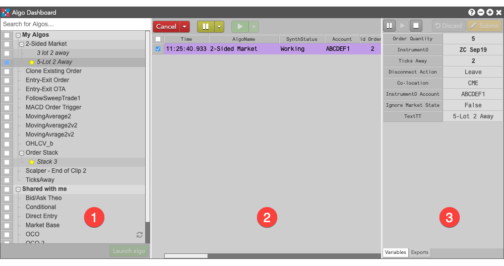

The Algo Dashboard lets you deploy, launch, and manage algos built using various tools such as ADL and TT Algo SDK. Using the Algo Dashboard, you can launch an algo, modify it's settings, and select a co-located data center nearest the exchange to execute your algo. You can open the widget by selecting Algo Dashboard from the Widgets menu.
After launching an algo, you can pause, resume, and cancel one or multiple instances of the algo. Click the check box to select one or multiple algo instances. Click the pause (orange) button to pause and click the start (green) button to resume. Click the cancel (red) button to cancel a selected running algo instance.
The Algo Dashboard consists of the following:
